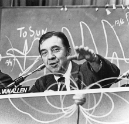

Please note: the AAS Obituaries are temporarily being hosted on this website while their full content is being ingested into the PubPub publishing platform newly adopted by the Bulletin of the American Astronomical Society. When the migration is complete, your existing links will take you to the final, migrated content. Contact peter.williams@aas.org with any questions.
James Alfred Van Allen (1914-2006)
James Alfred Van Allen, world-renowned space scientist, died 9 August 2006 at the age of ninety-one. He succumbed to heart failure after a ten-week period of declining health.
Van Allen served for his entire sixty-seven-year professional career as an amazingly productive researcher, space science spokesman, inspired teacher, and valued colleague. The realization by him and his associates that charged particles are trapped by the Earth's magnetic field began a whole new field of research, magnetospheric physics. Following that initial discovery, he and his associates quickly extended their observations, first to the inner planets, and then to the rest of the planets and beyond. During his tenure at Iowa, he and his group flew instruments on more than sixty successful Earth satellites and planetary spacecraft, including the first missions to the planets Venus, Mars, Jupiter, Saturn, Uranus, and Neptune.
Van Allen's lifetime publication list numbers more than 275, of which many are widely-cited, seminal papers. He was the sole author of more than 125 of those papers. Beyond the research laboratory, Van Allen worked energetically throughout his career in establishing space research as a new branch of human inquiry. He was among the most sought-after as a committee member and adviser, working at the highest levels of government, including the White House and Congress, and at all levels of the national and international research establishments. Many presentations in the non-scientific arena helped to bring the exciting discoveries and challenges of space research to the attention of the general public.
James Van Allen (Van to his many friends and colleagues) was born on 7 September 1914 on a small farm near Mount Pleasant, Iowa, the second of four sons of Alfred Morris Van Allen and Alma Olney Van Allen. After high school in Mount Pleasant, he entered Iowa Wesleyan College, majoring in physics and graduating summa cum laude. While there, he was introduced to geophysics research under the tutelage of physics professor Thomas C. Poulter, who served as chief scientist on the 1933-1935 Second Byrd Antarctic Expedition. He entered the State University of Iowa for his graduate work in physics, receiving his master's degree in solid state physics in 1936 and his Ph.D. degree in nuclear physics in 1939.
Van Allen's first post-graduate work was as a Carnegie Research Fellow at the Department of Terrestrial Magnetism (DTM) of the Carnegie Institution, located in Washington, DC. There, he was involved in the department's work on nuclear physics, geomagnetism, cosmic rays, auroral physics, and ionospheric physics. By late 1939, the war in Europe was escalating, and Van Allen shifted to development of the embryonic proximity fuse, continuing that work in the Applied Physics Laboratory (APL) that was established for that purpose in 1942. Van Allen and two colleagues took the first of the then highly secret radio proximity fuses to the South Pacific Fleet for initial field trials and introduction into combat.
Following the war, Van Allen organized the High Altitude Research Group at APL and directed it until his departure in1950. Among other things, he participated in the planning and use of captured German V-2 rockets. As that program was closing, he led the development of the Aerobee sounding rocket to meet the need for continuing high altitude research. The Aerobee achieved a remarkable record of achievement, with a total of 1,037 fired as of January 1985.
As the 1950s opened, Van Allen and his family moved to Iowa City, where he became Professor and Head of the State University of Iowa Physics Department. He and his new graduate students started a research program by using the university's football practice field to launch cosmic ray instruments with small surplus balloons. That quickly expanded to the use of rockets to carry larger balloons to greater heights. Those "rockoons," a Van Allen invention, were launched from a series of six highly successful field expeditions from 1952 through 1957.
As the prospect for launching Earth satellites began to materialize, Van Allen became an enthusiastic participant in planning and executing the U.S. program. After gaining a spot on the short list of initial experiments for the Vanguard satellite program, development of the cosmic ray instrument that he had proposed became a high laboratory priority. That instrument was launched in abbreviated form by an Army Jupiter C vehicle as Explorer I on 31 January 1958, and the full version was launched less than two months later as Explorer III. The two satellites resulted in what Van Allen considered the crowning event of his long and distinguished career — the discovery, with his university associates, of the bands of intense radiation that surround the Earth, now known as the "Van Allen Radiation Belts."
Van Allen continued to take a leading role in extending space research beyond Earth's orbit. His group sent instruments to the Moon, Venus, Mars, Jupiter, Saturn, and throughout interplanetary space. During his outstandingly productive career, Van Allen served as principal investigator on more than twenty-five space science missions.
James Van Allen was the consummate teacher and mentor. Years ago, when asked how he would most like to be remembered, he replied simply, "As a teacher." He supervised the preparation of forty-eight master's and thirty-four doctor's theses by sixty different individuals. He gave those graduate students extraordinary freedom and responsibility in the conduct of their projects. He always treated his students, both undergraduate and graduate, with respect, listening to them, learning from them, and guiding them with wisdom and kindness.
The folksy, pipe-smoking scientist worked from 1951 until 1964 in a modest office on the second floor of the old Physics and Mathematics building. He maintained his own private laboratory, where he continued to spend many hours with hands-on work at the bench. When the new Physics and Astronomy building was completed in 1964 (rechristened in 1982, appropriately, as Van Allen Hall), he set up his private working room apart from his departmental office in a large, soon-cluttered, corner office on the seventh floor.
That room became the center of his activity in 1985, when he retired as Department Head and active teacher. There, through his retirement years and until shortly before his death, he continued his roles as researcher, advisor, and mentor, serving at times as Professor Emeritus, Carver Professor of Physics, and Regent Distinguished Professor.
Van Allen maintained membership in over a dozen professional organizations and received over a dozen Honorary ScD degrees. His additional awards and other distinct forms of recognition are far too numerous to list here, but include AAS's Gerard P. Kuiper Prize, the Crafoord Prize of the Royal Swedish Academy of Science, the National Medal of Science presented by U.S. President Reagan, the National Science Foundation's Vannevar Bush Award, NASA's Lifetime Achievement Award, the 2006 Smithsonian National Air and Space Museum Lifetime Achievement Trophy, the Gold Medal of the Royal Astronomy Society, AGU's John A. Fleming Award and William Bowie Medal, and the Abelson Prize by the American Association for the Advancement of Science.
In addition to those many public acknowledgements of his prodigious contributions, James A. Van Allen will be fondly remembered by his many students, who now populate the entire realm of modern space research.
He is survived by his wife, Abigail Fithian Halsey II Van Allen, and his five children, Cynthia Van Allen Schaffner, Dr. Margot Van Allen Cairns, Sarah Van Allen Trimble, Thomas Halsey Van Allen, and Peter C. Van Allen.
Obituary written by: George H. Ludwig (Winchester Virginia, Retired National Aeromautics and Space Administration), Carl Edwin McIlwain (La Jolla, California, Research Professor of Physics, University of California San Diego)
BAAS Citation: BAAS, 2006, 38, 1283
SAO/NASA ADS Bibcode: 2006BAAS...38.1283L